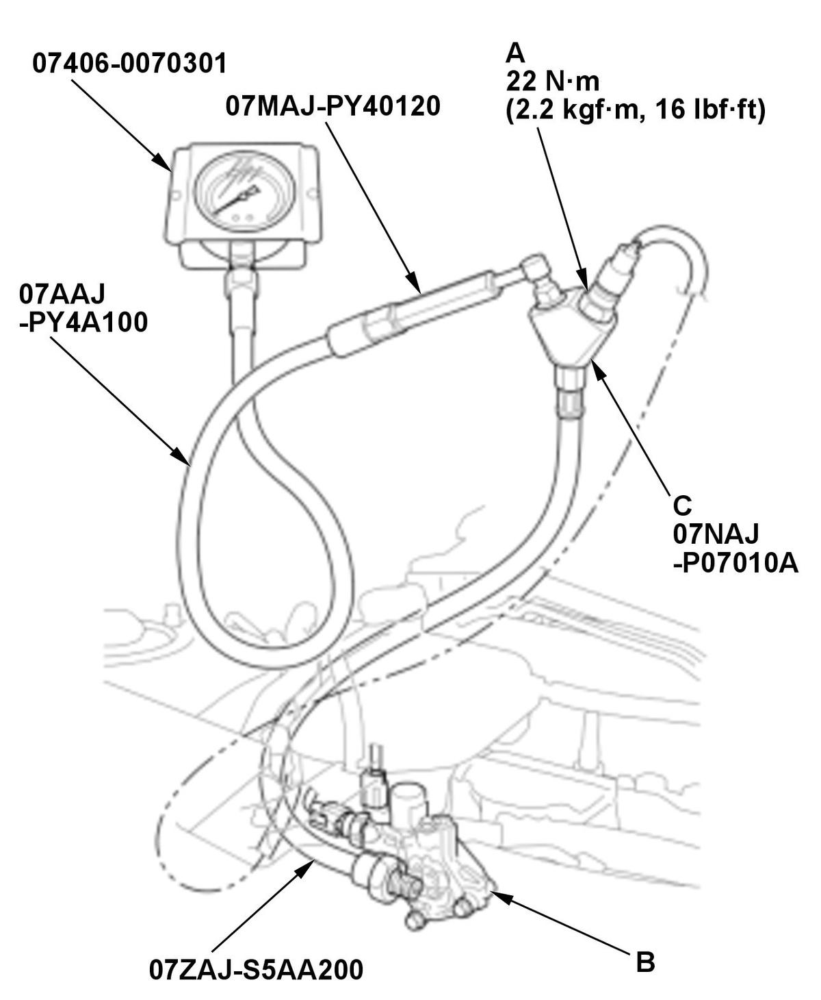

DTC P2651
DTC P2651 : Rocker Arm Oil Pressure Switch Performance/Stuck off
Special Tools Required
Pressure Gauge Adapter 07NAJ-P07010A
A/T Low Pressure Gauge w/Panel 07406-0070301
A/T Pressure Test Hose 07AAJ-PY4A100
A/T Pressure Adapter 07MAJ-PY40120
Oil Pressure Hose 07ZAJ-S5AA200
NOTE: Before you troubleshoot, review the general troubleshooting information .
| DTC Description | Confirmed DTC | Pending DTC |
|---|---|---|
| P2651 Rocker Arm Oil Pressure Switch Performance/Stuck off |
DTC (PGM-FI)
- Oil level check
-1. Check the engine oil level .
Is the level OK?
YES
Go to step 2.
NO
- Problem verification
-1. Turn the vehicle to the ON mode.
-2. Clear the DTC with the HDS.
Clear DTC
-3. Turn the vehicle to the OFF (LOCK) mode.
-4. Turn the vehicle to the ON mode.
-5. Select the VTEC TEST in the INSPECTION MENU with the HDS.
VTEC TEST
Does the HDS indicate Normal?
YES
Intermittent failure, the system is OK at this time. Check for poor connections or loose terminals at the rocker arm oil pressure switch and the PCM. If the on-board snapshot of this DTC is recorded, try to reproduce the failure under the same conditions with the on-board snapshot .
NO
The failure is duplicated. Go to step 3.
- Determine possible failure area (VTMEX line, others)
-1. Turn the vehicle to the OFF (LOCK) mode.
-2. Disconnect the following connector.
Rocker arm oil pressure switch 2P connector -3. Turn the vehicle to the ON mode.
-4. Measure the voltage between test points 1 and 2.
Test condition Vehicle ON mode Rocker arm oil pressure switch 2P connector: disconnected Test point 1 Rocker arm oil pressure switch 2P connector (female terminals) No. 2: Test point 2 Body ground Is there any voltage?
YES
Go to step 4.
NO
Go to step 6.
- Open wire check (PG line)
-1. Turn the vehicle to the OFF (LOCK) mode.
-2. Check for continuity between test points 1 and 2.
Test condition Vehicle OFF (LOCK) mode Rocker arm oil pressure switch 2P connector: disconnected Test point 1 Rocker arm oil pressure switch 2P connector (female terminals) No. 1: Test point 2 Body ground Is there continuity?
YES
Go to step 5.
NO
Repair an open in the PG wire between the rocker arm oil pressure switch and G101.
- VTEC system oil pressure check
-1. Remove the rocker arm oil pressure switch (A) from the rocker arm oil control valve (B), and attach the special tools as shown, then attach the rocker arm oil pressure switch that was removed to the oil pressure gauge adapter (C).

Courtesy of HONDA, U.S.A., INC.-2. Reconnect the following connector.
Rocker arm oil pressure switch 2P connector -3. Start the engine.
-4. Select the VTEC TEST in the INSPECTION MENU with the HDS.
VTEC TEST
-5. Check the oil pressure.
Is the oil pressure 45 kPa (0.46 kgf/cm2 , 6.5 psi) or more?
YES
Replace the rocker arm oil control valve (rocker arm oil control solenoid) .
NO
Inspect the VTEC system oil passage. If it is OK, replace the rocker arm oil control valve .
- Open wire check (VTMEX line)
-1. Turn the vehicle to the OFF (LOCK) mode.
-2. Jump the SCS line with the HDS, and wait more than 1 minute.
-3. Disconnect the following connector.
PCM connector No. 1 (96P) -4. Check for continuity between test points 1 and 2.
Test condition Vehicle OFF (LOCK) mode Rocker arm oil pressure switch 2P connector: disconnected PCM connector No. 1 (96P): disconnected Test point 1 Rocker arm oil pressure switch 2P connector (female terminals) No. 2: Test point 2 PCM connector No. 1 (96P) No. 48 Is there continuity?
YES
Go to step 7.
NO
Repair an open in the VTMEX wire between PCM connector No. 1 terminal No. 48 and the rocker arm oil pressure switch.
- Rocker arm oil pressure switch internal circuit check
-1. At the rocker arm oil pressure switch side, check for continuity between test points 1 and 2.
Test condition Vehicle OFF (LOCK) mode Rocker arm oil pressure switch 2P connector: disconnected PCM connector No. 1 (96P): disconnected Test point 1 Rocker arm oil pressure switch 2P connector (male terminals) No. 1 (switch side): Test point 2 Rocker arm oil pressure switch 2P connector (male terminals) No. 2 (switch side): Is there continuity?
YES
Replace the rocker arm oil pressure switch .
NO
Check for any authorized service information related to the DTCs or symptoms you are troubleshooting, or substitute a known-good PCM , then recheck. If DTC P2651 goes away and the PCM was substituted, replace the original PCM .